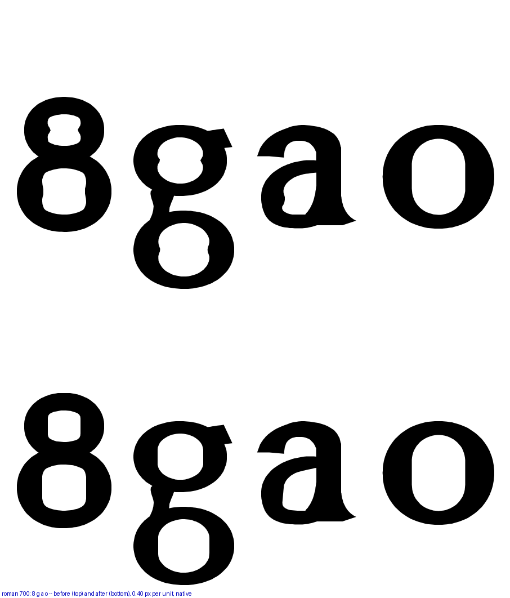
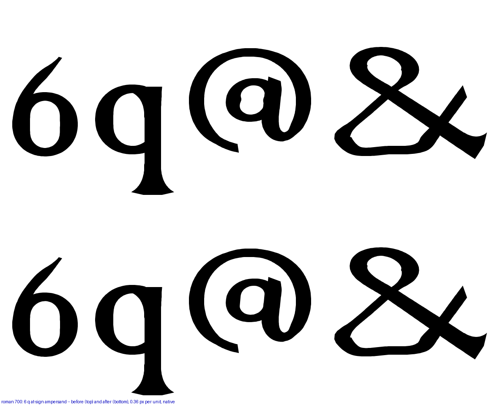
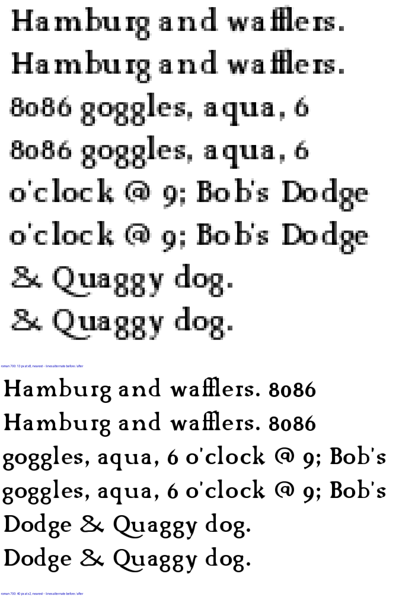
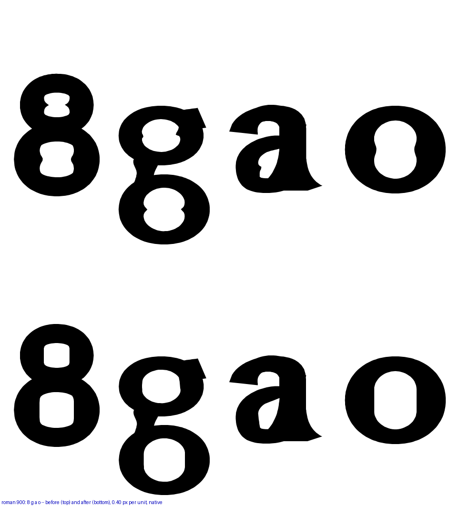
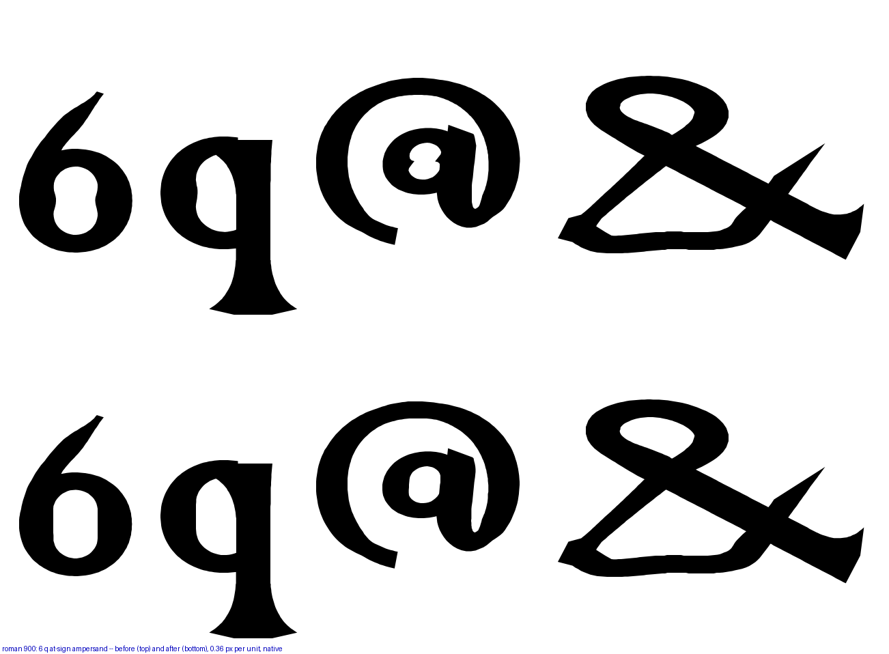
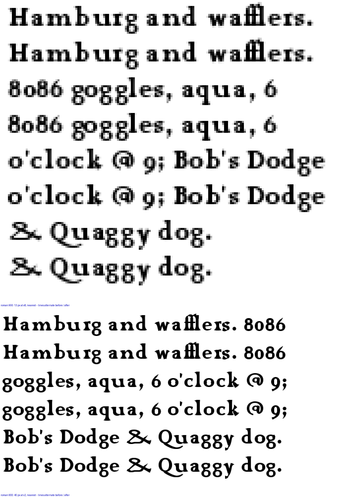
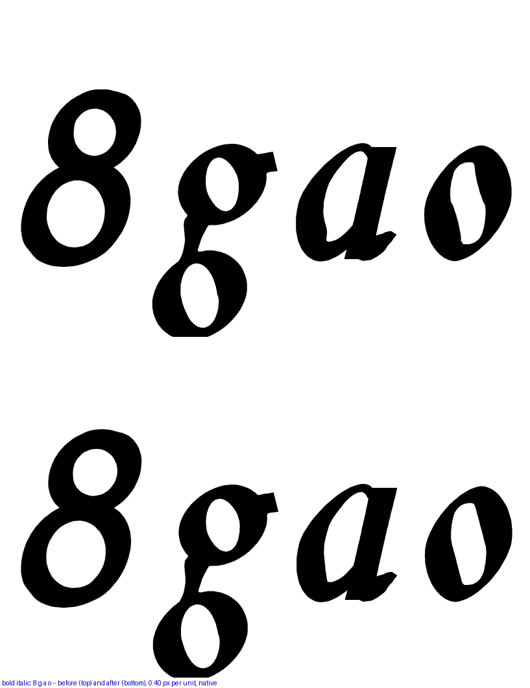
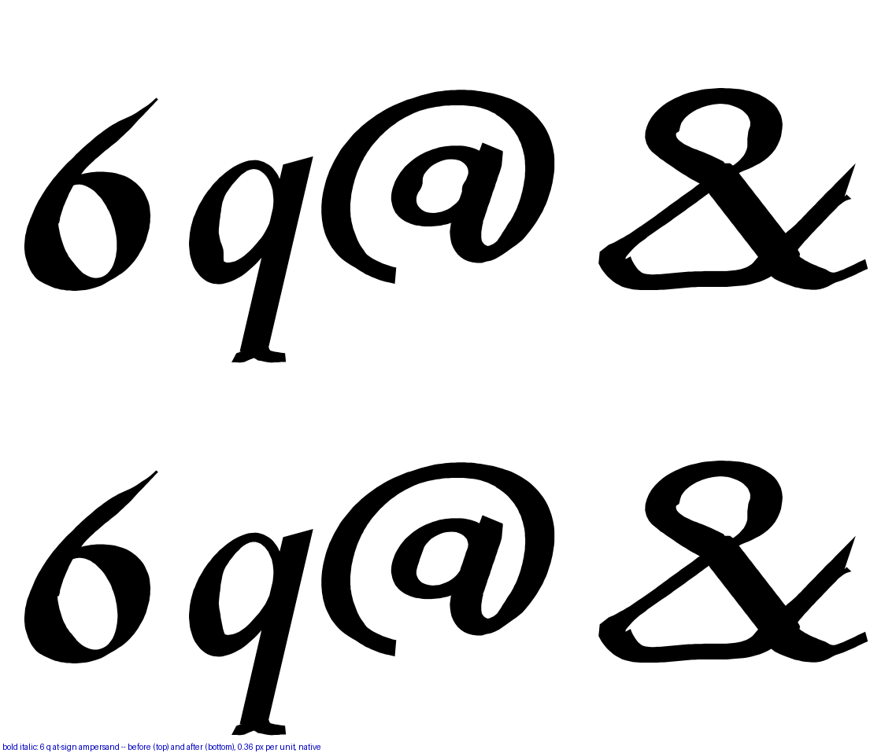
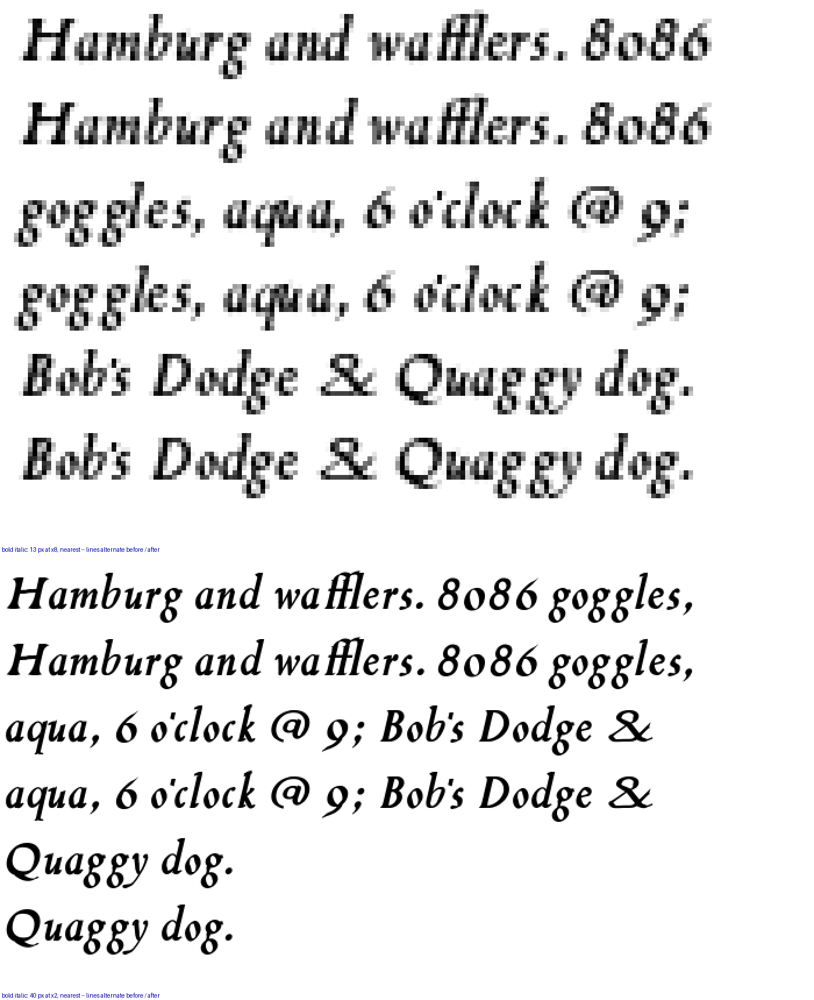

Your ruling, "for 700 and 900, counters should not have indentations in their counters," applied to every ring: above stem 84 a counter is its own convex hull, the outer untouched. Top row before, bottom row after. Native pixels, nearest-neighbour.
| face | dents before | after | deepest before | what moved |
|---|---|---|---|---|
| Bold 700 | 9 in 5 glyphs | 1 (the &) | 12.5 | O Q a b d g o p q 0 6 8 9 % @ ¤ © ª and the ring |
| Black 900 | 17 in 8 glyphs | 1 (the &) | 18.2 | the same set |
| Bold Italic 700 | 3 in 2 glyphs | 1 (the &) | 15.5 | the same set, plus ® |
| Regular 400, Italic 400 | 1 each, drawn so | 1 each | — | nothing — byte-identical |
The ampersand’s lower loop carries the same concavity at the 400 and is drawn that way; it is the one counter left with an indentation at the heavy ends. Say the word and it goes too.








